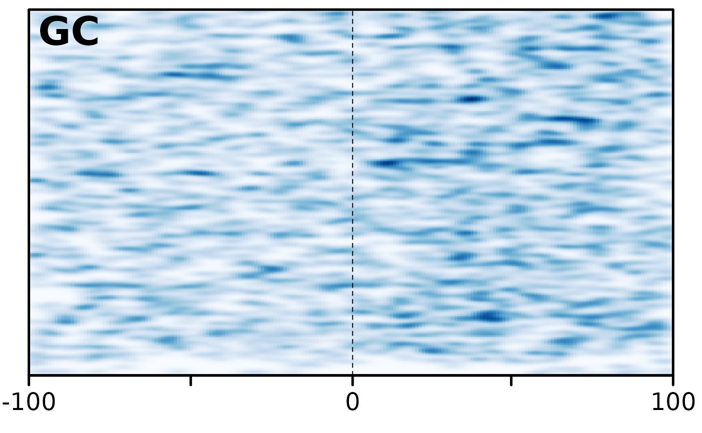

This function generates a heatmap of the specified pattern, over breakpoints
aligned at the centre of the plot. The result can be piped into
heatmaps::smoothHeatmap and then heatmaps::plotHeatmapList or
heatmaps::plotHeatmapMeta
Arguments
- gr
GRangesobject containing pairwise alignment- window
Range over which heatmap characteristic is plotted. Breakpoints will be aligned at the center of this.
- pattern
Character string of desired pattern/characteristic to be plotted on heatmap.
- ...
Pass other arguments to
get_bps.
Value
Returns a heatmaps::Heatmap object of pattern around centred breakpoints.
Note
The GRanges object is expected to have a sequence information
(see Seqinfo::seqinfo) that allows the retrieval its corresponding BSgenome
object via the BSgenome::getBSgenome function.
See also
Other plot functions:
bp_pair_analysis(),
feature_coverage(),
makeOxfordPlots(),
plotApairOfChrs()
Other heatmap functions:
bp_pair_analysis(),
feature_coverage()
Examples
# The plot makes no sense, but that is the best example I have at the moment.
exdata_Sac <- system.file("extdata/SacCer3__SacPar.gff3.gz", package = "GenomicBreaks")
gb <- load_genomic_breaks(exdata_Sac, BSgenome.Scerevisiae.UCSC.sacCer3::Scerevisiae)
bp_heatmap(gb, 200, 'GC', dir = "left") |>
heatmaps::smoothHeatmap() |> heatmaps::plotHeatmapList()
#>
#> Attaching package: ‘Biostrings’
#> The following object is masked from ‘package:GenomicBreaks’:
#>
#> pairwiseAlignment
#> The following object is masked from ‘package:base’:
#>
#> strsplit
#>
#> Calculating kernel density...
#> plotting heatmap GC
